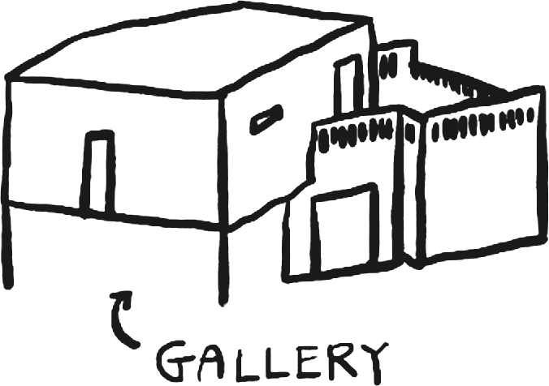

제1장
시안에 대하여
예술적으로 쉬다.
1.1이름
시안 CYAN은 파랑이자 초안(草案)을 의미합니다.
인쇄의 첫 번째 색인 파랑, 그리고 무언가를 처음 그려보는 초안. 시작과 초심의 뜻을 담았습니다. 호두마을의 초록 숲 한가운데에서, 그 초록과 대비되는 바다의 느낌을 떠올리며 지은 이름입니다.
1.2두 채의 집
시안에는 두 채의 집이 있습니다. 서로 다른 시간에, 서로 다른 모양으로 지었지만 한 마당을 함께 씁니다.

일층과 이층이 30도의 각도를 이루며 마당을 안아줍니다. 갤러리 안의 벽돌 아치와 달 조명이 고급스럽습니다. 이층 테라스에서 산으로 둘러싼 그림 같은 풍경을 만끽하세요.

붉은 고벽돌로 지어진 작지만 높은 뾰족집. 라푼젤이 사는 성 같기도 하고, 헨젤과 그레텔이 발견한 과자집 같기도 합니다. 문을 열면, 온통 노랑으로 가득한 내부가 따뜻하고 산뜻합니다.
1.3시안에서 하는 일
1.4이 집이 실린 곳
시안의 두 채의 집은 방송과 책으로도 소개되었습니다. 집을 짓게 된 마음과 과정이 궁금하시다면 함께 보아 주세요.
부록
오시는 길
광덕산 호두마을에 있어요.
31220, 충남 천안시 동남구 광덕면 만복골3길 10
- 광덕사 쪽 큰길에서 보산원초교를 지나 마을 길로 들어섭니다.
- 한가롬 찻집과 광덕4리 마을회관을 지나 계속 올라갑니다.
- 영희네를 지나 개울을 건너면, 위빠사나 명상센터 옆에 시안이 있습니다.
- 여는 시간
- 갤러리 · 숍 화 — 일 12:00 — 19:00, 월요일 쉼
북스테이 체크인 15:00 · 체크아웃 11:00 - 전화
- 전화번호